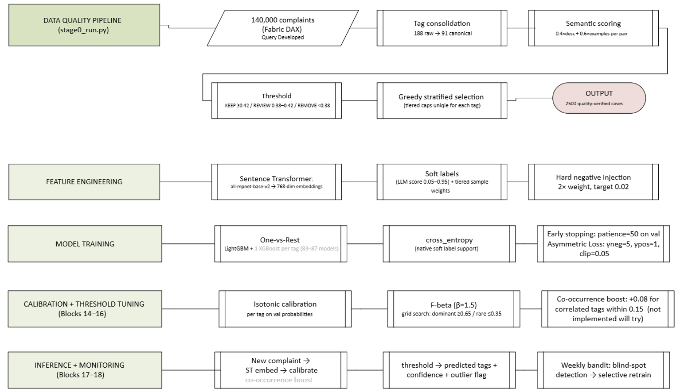
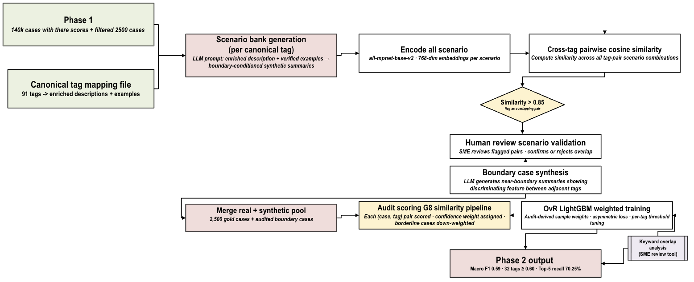

Industry project with the Telecommunications Industry Ombudsman (TIO)
Keyword Prediction for Complaints End-to-End Multi-Label Classification at TIO
Designed and delivered with TIO's highly technical complaints, data and policy team, this project builds a production-ready pipeline for Tier-2 tag prediction on 140k+ complaints while proving that in extreme multi-label settings, data quality and label governance, not model complexity, are the dominant levers.
Phase 1 production
Macro F1 0.4279 · 29 tags ≥ 0.60
Phase 2 LLM-enriched (testing)
Macro F1 ≈ 0.60 · 32 tags
Impact
Cuts manual search from 87–91 tags to 5 verified options per case
Why this problem matters for TIO
Each complaint carries 1–12 issue tags from a 87–91 tag taxonomy and drives regulatory reporting, trend analysis and policy decisions. Getting tags right at scale is core to TIO's mission and governance obligations.
1 Respect: TIO officers remain the decision-makers. The model produces a ranked shortlist to confirm, not an auto-decision.
2 Reliability: Scenario-based LLM enrichment focuses specifically on known boundary tags, not generic augmentation.
3 Scalability: The same machinery can underpin routing, operations planning and policy analytics beyond tagging.
The TIO context & why this problem is special
The Telecommunications Industry Ombudsman (TIO) is an independent dispute resolution body for Australian consumers. Its team handles tens of thousands of complex, multi-issue complaints each year and is accountable for transparent, accurate reporting to regulators and providers.
Each complaint must be annotated with one or more Tier-2 tags from a carefully designed taxonomy. These tags are not just metadata – they underpin regulatory dashboards, trend analysis, root cause reviews, and decisions about where industry and TIO should invest effort next.
- Complaints are long, multi-issue and imbalanced: some tags appear thousands of times per year, others only a handful. This makes naive machine learning brittle and evaluation tricky.
- Historical analysis revealed 188 raw tag variants for 87 canonical concepts, showing how hard the tagging job is and how seriously TIO engages with improving its own data quality.
- TIO partnered on this project with a genuinely hands-on, technically sophisticated team – supervisors were comfortable reviewing data pipelines, evaluation protocols and LLM prompts, not just final dashboards.
High-level constraints
- • Extreme class imbalance (up to 1,895:1) and 1–12 tags per complaint.
- • CPU-constrained production hardware; GPU access only for controlled experiments.
- • Ground truth is noisy: officer-assigned tags are very good, but not perfect.
Operational goals
- • Provide officers with a trustworthy ranked shortlist, not an opaque auto-decision.
- • Make tag boundaries and scenario definitions explicit and auditable.
- • Build something TIO can iterate and scale independently, not a one-off prototype.
What I actually built with TIO
Over nine experiments we discovered that almost every meaningful performance gain came from data strategy, canonicalisation and label governance, not increasingly complex models. The final system is a two-phase pipeline:
- Phase 1 – G0–G13 Gold Dataset Pipeline: builds a 2,500-case, quality-verified, stratified training set from 140k complaints with leakage guards, canonical tag mapping and greedy max-coverage selection.
- Phase 2 – LLM Scenario Bank & Oracle Layer: uses LLMs to learn boundary-conditioned scenarios for each tag, generate synthetic training cases where they matter most, and compare model predictions to an LLM “oracle” for live diagnostics.


Phase 1 – G0–G13 Gold Dataset Construction
- • G1–G4: ingest 140k complaints, canonicalise 188 raw tags to 87–91 canonical forms, remove leakage and duplicates.
- • G5–G7: compute semantic similarity scores and adaptive thresholds per tag to keep only cases that strongly support their assigned tags.
- • G8–G10: greedy max-coverage selection to preserve rare tags while maintaining coverage across multi-label combinations.
- • G11–G13: assemble 2,500 quality-verified training cases and train an OvR LightGBM model on sentence-transformer embeddings only.
Phase 2 – Scenario Bank & LLM Oracle
- • Per-tag scenario bank: for each canonical tag, an LLM reads its best examples and neighbouring tags, then writes 3–6 clearly distinguishable scenarios with include/exclude rules.
- • Geometric QC (Block 6): scenario embeddings are compared across tags to flag any overlapping definitions and auto-suggest sharper boundaries.
- • Training weights (Block 7): real and synthetic cases are re-scored, giving more weight to boundary cases where the scenario bank says ambiguity is highest.
- • Oracle comparison (Block 8B): an LLM predicts tags for a blind test set so we can compare model vs oracle vs ground labels and understand why a prediction failed, not just whether it failed.
Interactive demo – where Phase 2 really helps
This sandbox uses complaint-like examples (based on the CFPB public dataset) to show how the Phase 1 production model, the Phase 2 LLM-enriched model, and an LLM oracle disagree. The goal is not to replace officers, but to surface cases where extra training or sharper boundaries would add the most value.
How to read it
Choose a case, then compare how Phase 1, Phase 2 and the oracle behave. The agreement label tells you whether we have a data gap, a boundary issue, or a truly hard case needing human review.
1. Choose a complaint
Sample complaints (CFPB-style)
Complaint summary
True tag(s)
Service / channel
Why this demo matters for TIO operations
In production, this pattern lets TIO:
- Route boundary-ambiguous complaints to more experienced officers or specialist queues.
- Identify tags whose definitions or training data need refinement (clusters of ORACLE_WINS or BOTH_WRONG_SAME cases).
- Quantify where LLM knowledge adds value vs where historical data is already strong.
- Feed insights back into policy, reporting and workforce planning – not just the model.
2. Phase 1 – Production model
Ranked tag shortlist (LightGBM on gold data)
3. Phase 2 – LLM-enriched model
Boundary-conditioned training + weights
4. LLM Oracle & Scenario Match
Why this is more than “just tagging”
The most exciting part of this work for me – and for the TIO team – is that once you have canonical tags, explicit scenarios and a comparison layer, the same machinery becomes a platform for other decisions, not only complaint tagging.
- Operational routing: prioritise and route high-risk scenarios (e.g. fraud, safety, systemic billing issues) to specialist queues as soon as the complaint lands.
- Workforce planning: scenario frequencies tell TIO which skills are most in demand, informing training plans and headcount in specific dispute types.
- Policy and industry analytics: shifts in scenario mix over time highlight new product risks or emerging harms much earlier than aggregate counts alone.
- Explainability & governance: every model decision can be traced back to a scenario definition and boundary rule that a human expert can read and critique.
Scalability in practice
- • New tags or services can be onboarded by adding scenarios and examples, without redesigning the whole model.
- • The same approach generalises to other ombudsman schemes and regulated domains where complaints, reasons and obligations are expressed in free text.
- • Because the heaviest lift is the data and scenario work, TIO retains control: the organisation can keep enriching the scenario bank as policies and products evolve.
My contribution
I designed and implemented the full experimental roadmap, data pipeline, evaluation framework and LLM blocks, working closely with TIO's supervisors and academic partners. The aim was always twofold: deliver immediate value to TIO, and leave behind a platform they can scale.
Explore this project further
Once you connect this page to your GitHub repos, link them here – full report, notebooks and code for the data pipeline, LLM scenario bank and oracle comparison.